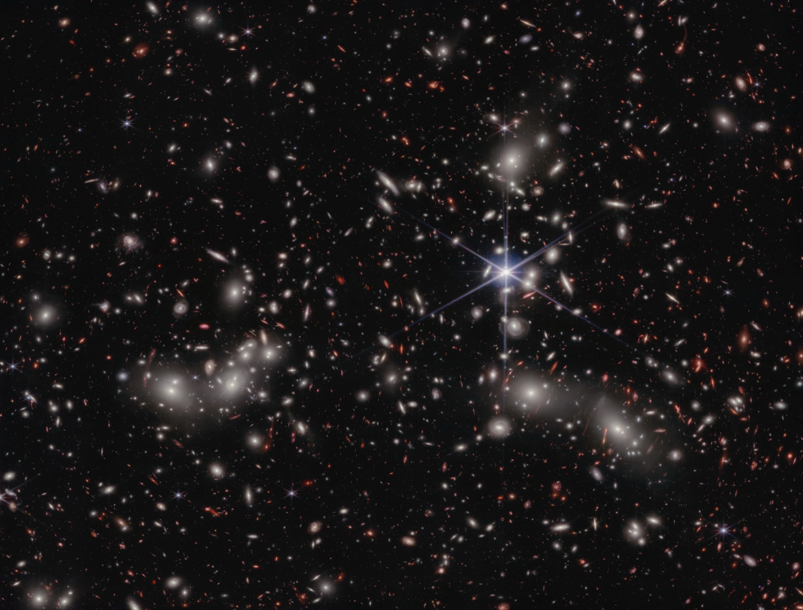
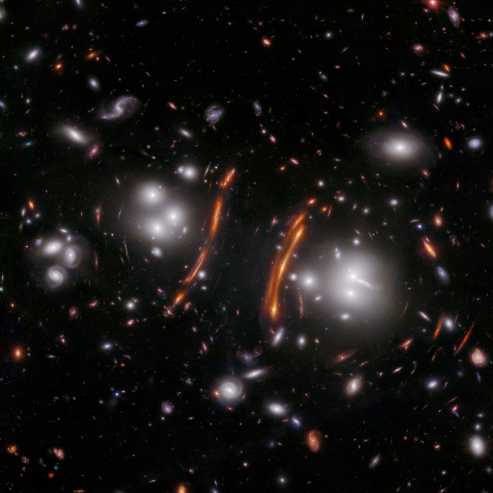
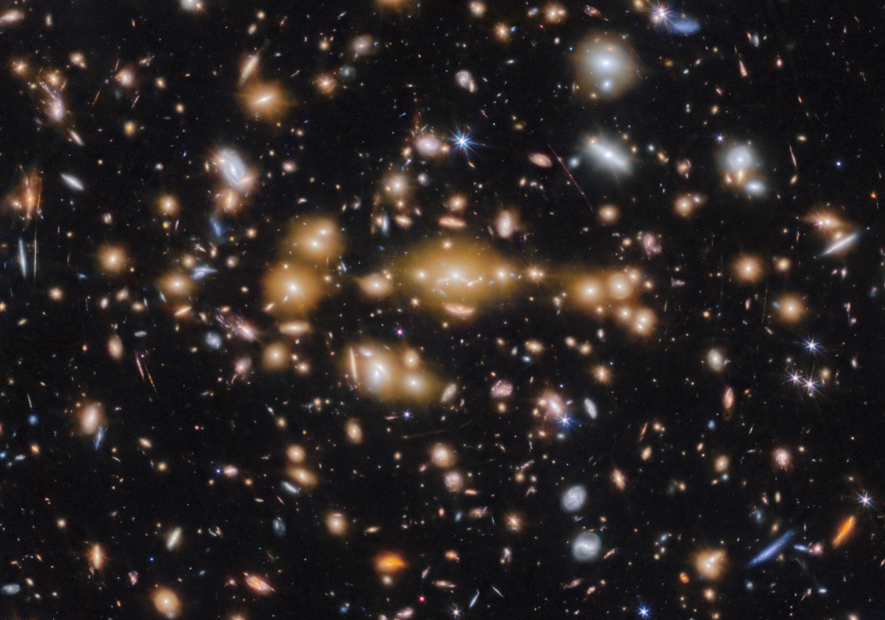

VENUS
VENUS is a multi-epoch Large Treasury program #6882 spanning JWST Cycles 4 and 5, awarded nearly 300 hours as the second largest JWST program to date. Led by PI Seiji Fujimoto (U. Toronto) and co-PI Dan Coe (STScI), VENUS is the first wide-area (~0.2 sq. deg, 5σ ≈ 28 mag) lensing cluster survey with JWST. The program is designed to reveal distant galaxies, AGN, stars, and supernovae at z ~ 4–20 that are intrinsically faint but apparently bright (thus spectroscopically feasible) due to gravitational lensing — providing unique laboratories to study the dawn of galaxies, black holes, and stars, in line with the core mission of JWST.
In Epoch 1 (Cycle 4), VENUS will conduct uniform, deep NIRCam imaging of massive galaxy clusters. In Epoch 2 (Cycle 5), the best 10 clusters, selected from the Epoch 1 "pre-imaging", will receive follow-up NIRSpec/MSA prism+G395M spectroscopy and additional NIRCam (F150W+F444W) imaging. Together with existing HST+NIRCam data, this strategy delivers unprecedented legacy fields: 60 clusters observed with 10 NIRCam filters (~0.16 sq. deg) and time-domain lensing fields (~0.13 sq. deg) for the entire community.
Key science goals include: (1) tracing the emergence of the earliest galaxies and star clusters; (2) spatially resolving early galaxies down to parsec scales; (3) measuring the mass and growth of the first black holes and faint AGN; and (4) discovering lensed individual stars and supernovae at high redshift to test the initial mass function. All data (images, catalogs, lens models) will be released immediately to maximize community access and scientific discovery in the JWST era.
Published Papers
Selected papers from JWST PID 6882.
- 7. Allingham, J. F. V., Zitrin, A., Kokorev, V., Yanagisawa, H., et al. “VENUS: Strong-lensing model of MACS J1931.8-2635 — revealing the farthest multiply imaged supernova,” arXiv:2602.14074 (2026). [ADS]
- 6. Yanagisawa, H., Ouchi, M., Golubchik, M., Oguri, M., et al. “VENUS: Two Faint Little Red Dots Separated by ~70 pc Hidden in a Single Lensed Galaxy at z~7,” arXiv:2601.06015 (2026). [ADS]
- 5. Coulter, D. A., Larison, C., Pierel, J. D. R., Fujimoto, S., et al. “A spectroscopically confirmed, strongly lensed, metal-poor Type II supernova at z = 5.13,” arXiv:2601.04156 (2026). [ADS]
- 4. Abdurro'uf, Coe, D., Resseguier, T., Murphy, C., et al. “Spatially Resolved Physical Properties of Young Star Clusters and Star-forming Clumps in the Brightest z>6 Galaxy, the Strongly Lensed Cosmic Spear at z=6.2,” arXiv:2512.08054 (2025). [ADS]
- 3. Zhang, Z., Li, M., Oguri, M., Lin, X., et al. “Little red dot variability over a century reveals black hole envelope via a giant Einstein cross,” arXiv:2512.05180 (2025). [ADS]
- 2. Golubchik, M., Furtak, L. J., Allingham, J. F. V., Zitrin, A., et al. “VENUS: When Red Meets Blue — A multiply imaged Little Red Dot with an apparent blue companion behind the galaxy cluster Abell 383,” arXiv:2512.02117 (2025). [ADS]
- 1. Nakane, M., Kokorev, V., Fujimoto, S., Ouchi, M., et al. “VENUS: A Strongly Lensed Clumpy Galaxy at z~11–12 behind the Galaxy Cluster MACS J0257.1-2325,” arXiv:2511.14483 (2025). [ADS]